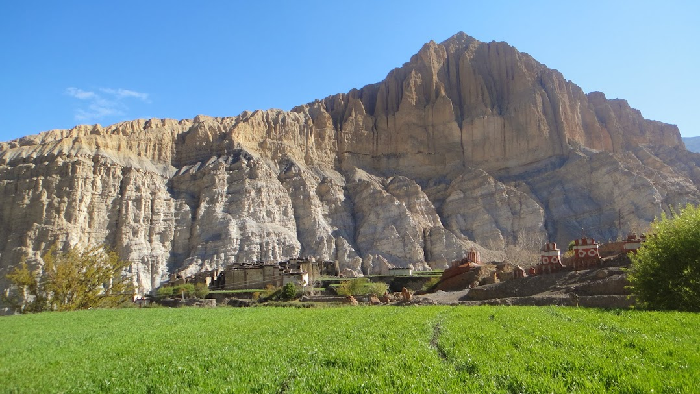
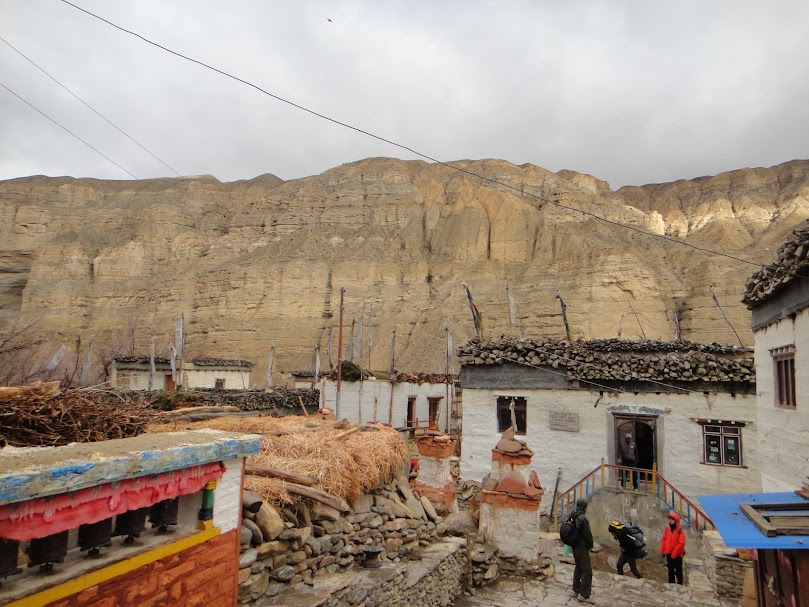
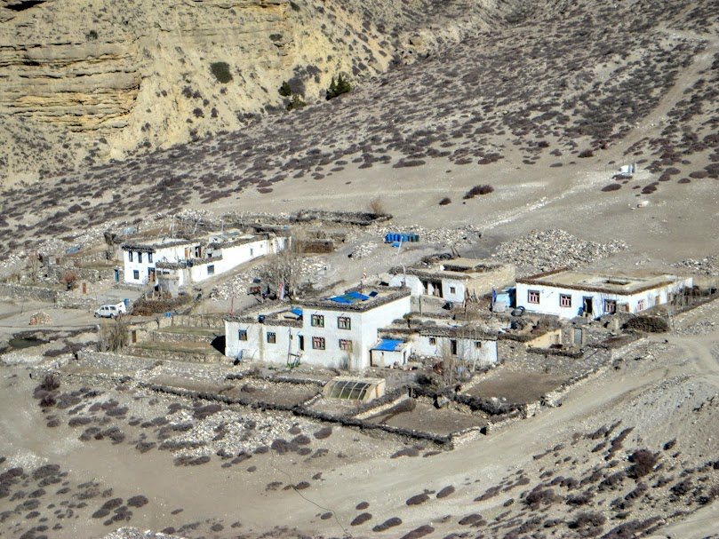
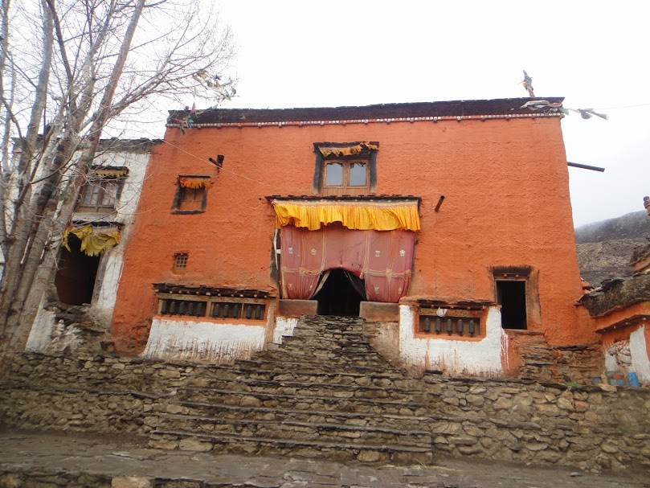
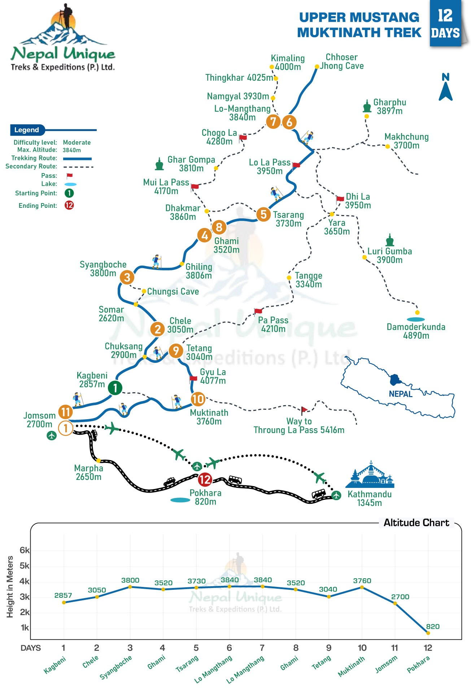

Upper Mustang Muktinath Trek
of Upper Mustang Muktinath Trek Upper Mustang Muktinath Trek is at an average altitude of around 3,840 meters (12,600 feet) above sea level. The region experiences a cold dessert climate, harsh winters, and cool summers.





Key Trip Facts
Trek Overview
Trip Highlights
Overview of Upper Mustang Muktinath Trek
Upper Mustang Muktinath Trek is at an average altitude of around 3,840 meters (12,600 feet) above sea level. The region experiences a cold dessert climate, harsh winters, and cool summers. It receives very little rainfall due to its location in the rain shadow of the Himalayas.
Upper Mustang has a rich cultural heritage with strong ties to Tibetan Buddhism. The region is dotted with ancient monasteries, Chortens (Buddhist shrines), and caves with intricate murals and sculptures. The capital of Upper Mustang is Lo Manthang, a walled city that served as the center of the former Kingdom of Lo. Until 1992, Upper Mustang was restricted to foreign visitors. Even today, visitors need a special permit to enter the region, and they are required to travel with a licensed trekking agency.
The trek to Upper Mustang is a popular and challenging adventure, offering stunning views of the Himalayan landscape and unique cultural experiences. The trek typically begins in Jomsom and passes through Kagbeni before reaching Lo Manthang. The route takes trekkers through arid landscapes, deep gorges, and picturesque villages.
Lo Manthang is the capital of Upper Mustang and is known for its medieval charm. A 16th-century wall encloses the city, and its narrow streets are lined with whitewashed houses and ancient monasteries. The king's palace, monasteries such as Thubchen and Jampa, and the Amchi Museum are notable attractions in Lo Manthang. The Mustang celebrates various religious festivals, with the Tiji Festival being one of the most significant. Tiji is a three-day ritual known for its colorful masked dances, and it is held annually in Lo Manthang.
Due to its unique culture and fragile environment, there are efforts to preserve the cultural and natural heritage of Upper Mustang. The Annapurna Conservation Area Project (ACAP) plays a role in managing and conserving the region.
The vegetation in Upper Mustang is sparse, and the region is characterized by barren landscapes and high dessert terrain, Wildlife is limited, but some species like the elusive snow leopard can be found in the area. Visiting Upper Mustang provides a glimpse into an ancient and preserved way of life, along with breathtaking landscapes and cultural treasures.
Why Nepal Unique Treks for Upper Mustang Muktinath Trek
With the multitude of trekking companies all vying for your attention, we understand that we must truly step up to win your selection. Here’s why we're confident that Nepal Unique Treks will be the best choice for all your trekking needs.
Our Team Well Prepared for every Situation
This Upper Mustang Muktinath Trek takes you to the beautiful cliffs, caves, rivers, and gorges. As such we understand that your safety cannot be taken lightly. We have a comprehensive first aid kit handy and our staff has years of experience on these trails. Additionally, we have been providing reliable trekking services since 2014. As such you are in capable hands and no trade-off will be made to either your safety or your trekking experience.
High Success Rate with Nepal Unique Treks
We have many years of fieldwork experience with confidence. Of coerce, it comes from the rave reviews of our privies customers. Which is evident from the glowing reviews have been honored to receive. We have 100+ trekking destinations with a 100% success rate. We prepared our team as qualified professionals and knowledgeable. That’s the fact Nepal Unique Treks have a 100% high success rate.
Unrivaled Hospitality and professionalism
As a Trekking Agency in the Tourism Industry, We know that your Experience rides on the quality of our team. We have made absolutely no compromises, and you are sure to notice this. Even high up in low Mountain, we have ensured that the entire lodge delivers the highest degree of hospitality. All our guides are well-versed in the rich history of not just the Upper Mustang Muktinath Trek, but the pit stops on the entire journey. With years of first-hand trekking experience on their belt, you can rely on them to lead the trails and be sure that your safety is a priority.
Best Time to Trek for Upper Mustang Muktinath Trek
Upper Mustang is a remote arid area of the trans-Himalayan Mountains. Bordering Tibet, this region has a distinct Tibetan feel – both in its people and culture and in the landscape. High rocky cliffs of unusual formation and color, caves, rock paintings, monasteries, and, of course, high snowy mountains are a feature of this region.
Being in the rain shadow, there is no monsoon in this dry region, making it a perfect area to explore during the summer (monsoon in Nepal) months. Winters are harsh; with most of the local population migrating to Pokhara or Kathmandu, so that is not a good time to trek.
Spring Time – March, April and May
This is a great time to visit Upper Mustang, particularly if trekking in from Lower Mustang as the weather will be warmer and the rivers full of snowmelt in the lower regions.
time of year is probably best if you are planning to cross high passes or go climbing in the Upper Mustang. The middle of May is also the time of the Tiji Festival at Lo-Manthang. This festival lasts for 3 days and is a reason to come in May. Temperatures at this time of year are generally between 16 and 22 degrees Celsius.
Level of Difficulty: This is a very good time to trek, but remember Upper Mustang is considered a ‘demanding’ trek, and a good level of fitness is required, with the arid air making the average (for Nepal!) altitude seem higher.
Monsoon – June to September
There is no monsoon in Upper Mustang, which makes it a very good trekking area for those who have to take their annual leave during the summer months. Further down the mountain in Lower Mustang, the trails will be wet and possibly slippery, and flights from Pokhara to Jomsom may be delayed due to the weather.
Once you reach Upper Mustang it’s a whole different world. The August full moon day is also the date marked for the horse festival, or Yartung Mela as it’s known locally. This 3 or 4 days event starts in Lo-Manthang and travels downwards, with horse races, archery, dancing, and festivities all the way! Temperatures vary from lows of 16 degrees to highs of mid-20s Celsius.
Level of Difficulty: Again this is a good time for trekking in Upper Mustang but do remember that the dry air makes the altitude seem higher than it is, and good fitness is a must. If trekking in from the lower altitudes which are in monsoon mode, you will need gear for wet days.
Autumn – October, and November
As across the whole of Nepal, autumn is the time with the bluest skies and clearest mountain views. Afternoons can be windy though so be prepared! In general, temperatures range from 12 to 20 degrees Celsius.
This is the end of the trekking season in Upper Mustang as lodges close and villagers migrate to Pokhara or Kathmandu to wait out the harsh winters. Trails disappear under snow and heavy-duty winter gear is required after November.
Level of Difficulty: Other than the same advice of remembering that Upper Mustang is considered a ‘demanding’ trek so a good level of fitness is required, this is a good time to trek and no special gear is required. If you are trekking towards the end of the season, heading into winter, you should be prepared for snow and very low (minus Celsius) temperatures.
Upper Mustang Muktinath Trek Itinerary: Day by Day
12 Days program for Upper Mustang Muktinath Trek. Daily timings and sequences remain flexible according to weather, flight operations, and group pace.
Day 1: Fly from Pokhara to Jomsome 2745 m and 4 hrs Trek to Kagbeni 2857 m,
Approx. 2,857 m / 9,373 ft
we will be catching a flight early morning from Pokhara to Jomsom. The flight will only take 20 minutes, which is bound to feel too short regardless due to the scenic views. Jomsom is a market town. You will find yourself immediately amongst the hustle and bustle of this town. From here, we will begin our trek along the Kali Gandaki riverbed. The soft flowing water will add an excellent soundtrack to your three-hour journey. Once you reach Ekley-Bhatti village, you will stop to get some refreshments. You will then continue to Kagbeni, which will take you about one more hour. Kagbeni is a delightful village that sits on the bank of two rivers. Kagbeni, known for its walled passages and sweeping landscapes, will be the perfect view for you to recharge too. Once we check in to our hotel/guest house, you have the rest of the day free to roam around this village.
Day 2: Trek from Kagbeni to Chele 3050 m, 6 hrs Trek
Approx. 3,050 m / 10,007 ft
After breakfast, we will set off. You can expect Mount Nilgiri to be waiting with the first rays of daylight as we begin our trek. This area is known to be windy, and the wind not only rustles through the valley but will also helps keep you cool as you walk. Prepare to be awed by a view that quite literally feels out of this world. You will see the red sandstone pillars and rock formations that Mustang is known for. The first village that you will pass will be Tangbe. Here you will see sprawling fields of buckwheat and barley along with lines of whitewashed houses. This area is also known for its apple orchards. We will be following the western route and walking along the riverbank. As you trek up the valley, you will reach a vertical cliff, where we will cross the Kali Gandaki River. You can expect a great view of the valley and the Nilgiri Mountain. The trail will become steeper and lead you up to Chele. Chele is a small town and offers an excellent view of the Himalayas. This leg of the trek will take you about 6 hours.
Day 3: Trek from Chele to Syangbochen 3800m, 6 hrs
Approx. 3,800 m / 12,467 ft
Post breakfast, you will follow a steep trail towards the west. You will be following the path heading towards the opposite of a deep canyon, which will take you to the Ghyakar viewpoint. The landscape surrounding you stretches to miles flaunting barren and eerie beauty. The canyon ahead shows a vertical drop of over 100 meters. Around you, the scene is so quiet that you will almost feel one with your breathing as you trudge along. After an hour of walking, you will be able to marvel at magnificent snow-capped peaks at a distance. About two hours after you cross Samar village, you will come across the Rangchyung Chorten. It is a red painted cave monastery that is also one of the most sacred places in Mustang. The highlight of this monastery is that it looks as if it is hanging on to the vertical wall. The name itself means ‘the chorten that formed itself.’ If you venture inside, you will see lines of prayer flags that decorate the ceiling. Inside, two large stalagmites form a Buddhist shrine. On this day, you can expect to be trekking for about 6 hours. It does get a little more strenuous as you cross the Taklam La pass (3624m) and the Darjori La pass (3735m). However, the trail takes you past a breathtaking gorge and beautiful greenery, which will help make this trek much smoother.
Day 4: Trek from Syangbochen to Ghami 3490m, 6 hrs Trek
Approx. 3,490 m / 11,450 ft
This day’s trek will take you through three high passes and about 6 hours of walking. The first one is Yanda La (3850m), which is marked by a distinctive red Chorten that flaunts the eight auspicious symbols of Buddhism. This pass is also marked by barley fields and the surrounding small villages. The next pass is Nyi Pass (4010m). Once you pass through here, you will find a gradual descent that leads you towards Ghami La pass. Here, you will be trekking alongside a downstream and notice that the landscape has gotten quite rugged. The red cliffs and sand dunes stretch across the broad valley as you reach Ghami.
Day 5: Trek from Ghami to Tsarang 3730m, 6 hrs Trek
Approx. 3,730 m / 12,238 ft
As you head off on this day’s trek, you will first have to pass a suspension bridge over the Ghami River. As you trudge on, you will pass gorgeous mani (stone-built) walls full of Tibetan mantra engravings. There are also many shrines, and the color red dominates the architecture. This day’s trek will take you about 4-5 hours. The trail will lead you upwards to a pass at 3820m. You will see a barren landscape far into the horizon with no plant life or humans. It is a powerful scene that is bound to evoke a feeling of extraterrestrial beauty. As you trek on, you will reach Tsarang Chorten. This red stupa stands alone, welcoming you down the trail to the town of Tsarang with only 1000 inhabitants.
Day 6: Trek from Tsarang to Lo-Manthang 3840m, 6 hrs
Approx. 3,840 m / 12,598 ft
After days of uphill climbing, this day will be much easier on your feet. We will be taking you over flat terrain. All along the way, you will witness barren landscapes dotted with the occasional shrine or caves. Once we drop down into a canyon, we will be crossing a river. Then begins the ascend to the Lo La pass (3950m/12959 ft). At a distance, you will begin to see glimpses of the Lo Manthang village. As you get closer, you will get to marvel at the unique beauty of this historic village. This leg of the trek will take you about 5-6 hours.
Day 7: Exploring Chhoser Cave, Historical Temple and monastery 5/6 hrs
Approx. 3,840 m / 12,598 ft
Early in the Morning, your guide will arrange honest and nice horse to ride to Chhoser Cave and village, Today is a very special day because you are going to visit a Unique, Historical Cave, Explore beautiful villages and their people's lifestyle, you will be very closer to Tibet border from the Cave. Return to your Hotel by riding hoarse might be you will get tired so you may need some relaxation, An early evening Last visit Kings Palace and many more Buddhist Temple and their museums by walking surrounding there.
Day 8: Lo-Manthang to Ghami 3520m 7 hrs Trek
Approx. 3,520 m / 11,549 ft
With our hearts and camera storage full, we will begin our trek back. This day we will be walking through luscious pastures, and we are sure you will be turning again and again until Lo Manthang disappears behind you. But don’t you worry the journey ahead promises to be just as stunning. Our route back will take you through Chorong and reach Lo Gekar. The trail will pick up again as this day’s trek will take you about 4-5 hours of walking. We reach a pass where you will get an excellent view of the valley. On the way you will visit the Old and Historical Gompa of (Guru Padma Sambhab) Guru Rinpoche where you will purify your soul and wish for a beautiful future life. This day we will be descending back to again Ghami village (3440m).
Day 9: Ghami to Tetang Village.3040 m, 4 hrs Drive
Approx. 3,040 m / 9,974 ft
Today is an easy and relaxing day because we will drive by Jeep to Tetang village. However, during the drive promises to balance the scales by offering unrivaled views of both Tilicho and Nilgiri. You can watch the Annapurna range loom closer and closer as you make your way towards civilization. The green begins to dominate as the vegetation grows, and the descent part should feel relatively easy. We will, however, have plenty of breaks, so you don’t have to worry about overexerting yourself. We will be entering the riverbed of the Kali Gandaki region to head towards Chuksang or Tetang village. Walking these familiar routes, you are bound to feel a gushing sense of accomplishment, much like the river you will be walking next to. Once you start seeing red and white Chortens in the lap of towering red and brown hills, you know you are almost at Tetang.
Day 10: Trek from Tetang Village to Muktinath 3760m, 7/8 hrs Trek
Approx. 3,760 m / 12,336 ft
Early morning, we will head out to navigate a plateau. This plateau is quite steep but offers an excellent view of the settlements below. You can expect about three hours of uphill climbing, and the trail promises you an authentic trekking experience. The trail is lined with loose black gravel and gets narrow, high, and low, providing both challenge and thrill. Once you arrive at the pass, the mountains loom close. You can even draw out the large glaciers and the sunlight reflecting off the white snow. From here, you are sure to barely notice the walk to Muktinath as you will be busy trying to capture the views of Dhaulagiri and Annapurna. As you start passing by houses, you can tell that the holy destination is close by.
Day 11: Trek from Muktinath to Jomsome2743 m, 6 hrs Trek.
Approx. 2,743 m / 8,999 ft
Instead of taking our original route back, we will be mixing things up and taking a detour to Bon Punt, a Shaolin monastery in Lubra. The settlement around this area is scattered and only consists of about twenty old houses. Here, you can first-hand see a monastery built in the 12th century, which is also one of the few remaining such monasteries. Flaunting a simple yet rich architecture, this will be a day well spent as you immerse yourself in this traditional atmosphere. From here, we will join the trail again and cross the river Panga to reach Jomsom. Also, we do use alternative trekking routes through Lubra Village. Where you can see the magnificent landscape with Bond Religious Village, and their people's lifestyle.
Day 12: Flight from Jomsome to Pokhara 810 m, 25 m Flight
Approx. 810 m / 2,657 ft
We will be flying you to Pokhara, where you have the remainder of the day off for a well-earned rest day. This lake town has quite a lot to offer, and we are sure it is the perfect place for you to celebrate your successful trek.
What is Included (Regular Package)
What is Excluded
Booking Dates & Availability
Packing List for Upper Mustang Muktinath Trek
Don't have it? Rent sleeping bags, down jackets, or poles in Kathmandu or arrange with us.Hiking Gear (5 items)
Layering & Clothing (5 items)
Sleep, Toiletries & Documents (3 items)
Read before you book: Upper Mustang Muktinath Trek
Practical logistics derived directly from this package's route facts, inclusions, and elevation profile.
Accommodation & Meals (Hotel, Lodge and Teahouse)
Accommodation follows the package grade (Hotel, Lodge and Teahouse) in Kathmandu and along the Mustang route. Check your package Includes section for included meals and Kathmandu hotel nights.
Permits & Local Logistics
Transportation is arranged via Flight, Car. Applicable permits listed in the package inclusions are arranged by Nepal Unique Treks prior to departure.
Route Difficulty & Elevation (3840 m)
Upper Mustang Muktinath Trek is rated Easy with a maximum elevation of 3840 m. Follow your guide's pacing and stay hydrated throughout the 12 Days itinerary.
Best Time to Visit (Jun, November, and March to Jun)
Recommended operating season on the source page: Jun, November, and March to Jun.
Altitude Profile of Upper Mustang Muktinath Trek
Weather on Upper Mustang Muktinath Trek
Upper Mustang Muktinath Trek Route Map

Book This Trek
Contact our Kathmandu coordinators using the booking panel for private or fixed-group departures.
Trip Feedback
Explore verified traveller stories or leave feedback on Nepal Unique Treks.
Visit Nepal Unique Treks